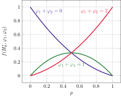

Score de risque polygénique et épistasie: une approche "model free" basée sur le processus de coalescence
Patrick Fournier, Fabrice Larribe
Séminaire STATQAM
17 novembre 2022
Phénotype
- Propriété observable d'un organisme
- Déterminé par génotype (i.e. bagage génétique) & environement
>
Génome
- Information génétique d'un organisme
- ADN, ARN
- Humain: brins d'ADN (chromosomes)
- Pour nous: mots sur un alphabet de 4 lettres: \(\{ A, C, X, G \}\)
- \( X = T \) (ADN), \( X = U \) (ARN)...
Exemple: Section du génome de la perruche ondulée (ADN)1

Exemple: Début de la séquence de référence pour SRAS-CoV-2 (ARN)2
CGGUGACGCAUACAAAACAUUCCCACCAUACCUUCCCA GGUAACAAACCAACCAACUUUCGAUCUCUUGUAGAUCU GUUCUCUAAACGAACUUUAAAAUCUGUGUGGCUGUCAC UCGGCUGCAUGCUUAGUGCACUCACGCAGUAUAAUUAA …Taille totale \( \approx 7.4 \) KiB
Exemple: Section de la séquence codant pour la protéine S de SRAS-CoV-2 (ARN)3
… ΨGAACCΨGACCACCAGAACACAGCΨGCCΨCCAGCCΨAC ACCAACAGCΨΨΨACCAGAGGCGΨGΨACΨACCCCGACAA GGΨGΨΨCAGAΨCCAGCGΨGCΨGCACΨCΨACCCAGGACC ΨGΨΨCCΨGCCΨΨΨCΨΨCAGCAACGΨGACCΨGGΨΨCCAC …Taille totale \( \approx 1.05 \) KiB
Génotype vs phénotype
- Génome = exons \( \cup \) introns
- Exons: traduits en protéines
- Introns: régulent l'expression des gènes
- Humain: exome \( \approx 1.2 \% \) génome (\( \approx 8.9 \) Mb)
Marqueur génétique
- Représentant d'une section du génome
- Possède des propriétés intéressantes
- Plus populaires: polymorphismes nucléotidique
- Anglais: Single-nucleotide polymorphism ou SNP
- Substitution d'un unique nucléotide à une position donnée
Pourquoi on 💜 les SNPs
- Denses (mais distribution non homogène)
- Souvent bialléliques \( \Rightarrow \{ 0, 1 \}\), allèle majeur/mineur
- Faible taux de mutation \( \Rightarrow \) sites infinis
- Partitionent la population
Processus de coalescence
- John Kingman, 19824
- Processus de mort pur sur les relations d'équivalence sur \(\{ 1, 2, \ldots, n \}\) 🤓
- égalité \( \to \) relation universelle
- «Avoir un ancêtre commun» est une relation d'équivalence
- Plus simple à comprendre en pratique
\begin{algorithm}
\caption{Coalescent sur \( n \) séquences}
\begin{algorithmic}
\STATE \( S = \{ 1, 2, \ldots, n \}\)
\STATE \( t \leftarrow 0 \)
\WHILE{\( |S| > 1 \)} \COMMENT{\( n - 1 \) itérations}
\STATE Choisir paire de séquences \( \{ x, y \} \) uniformément
\STATE Mettre à jour \( t \leftarrow t + \text{Exp}(|S| - 1) \)
\STATE Faire coalescer \( x \) avec \( y \) dans \( z \) au temps \( t \)
\STATE Mettre à jour \( S \leftarrow (S \setminus \{ x, y \}) \cup \{ z \}\)
\ENDWHILE
\end{algorithmic}
\end{algorithm}


Mutations
- SNP bialléliques \( \Rightarrow \) beaucoup de restrictions
- Mutations/position \( \leq 1 \) (sites infinis5)
- Pas d'homoplasie (sites infinis)
- Allèle majeur 0 \( \to \) allèle mineur 1
- Processus de Poisson sur les branches du graphe
- \( \Rightarrow \mathcal U \) conditionellement à l'arbre & # mutations


Recombinaisons
- Une séquence hérite de deux parents
- «Coalescence à l'envers»
- Créent structure de corrélation complexe entre marqueurs: déséquilibre de liaison
- Fréquence de certaines paires d'allèles diffère de celle attendue
- Histoire: arbre; graphe

Définition
- Somme pondérée de l'effet d'un ensemble de SNPs sur un phénotype quantitatif6
- Poids basés sur la taille d'effet des SNPs estimés à partir d'une GWAS6
- À l'origine, suppose que l'effet est additif
PRS en pratique
PRS \( \Leftrightarrow \) combinaison linéaire de comptes d'allèles. Score sur \( m \) allèles:
$$ \textcolor{#e65100}{\overbrace{\hat s}^{\text{score}}} = \sum_{k = 1}^m \textcolor{#4d7e65}{\underbrace{x_k}_{\text{compte}}} \textcolor{#9558b2}{\overbrace{\hat{\beta}_k}^{\mathclap{\text{poids}}}} $$Hypothèses
- Additivité & linéarité
- Parfois peu vraisemblables
- Estimation des \( \beta_k \) basée sur GLM
Cela étant dit,
- Certains phénotypes sont simples
- PRS fonctionnent souvent bien en pratique
Épistasie
- Interaction intragénomique
- Difficulté majeure dans l'analyse des données de GWAS7
- Possible de mitiger, mais l'approche «naïve» est sans espoir (\( \mathcal O(2^m) \) termes)
- Par contre, certaines formes d'épistasie pourraient se refléter dans des effets additifs8
Épistasie vs machine learning 🤖
- Possible de relaxer les hypothèses
- Toutefois, la sélection des marqueurs est le facteur ayant le plus grand impact sur les capacités prédictives d'un modèle de machine learning9
- Mécanisme d'action génotype \( \to \) phénotype largement inconnu
Approche par vraisemblance
- Objectif: tenir compte de l'épistasie sans expliciter le modèle
- En pratique: calculer la vraisemblance d'un phénotype \( \varphi^* \) étant donné haplotype \( h_0^* \)
- Basée sur paires haplotypes-phénotypes $$ H_0 \bigtriangleup \Phi = \left\lbrace (h_0^1, \varphi_1), \ldots, (h_0^n, \varphi_n) \right\rbrace $$
- Notation: \( H_0^* = H_0 \cup \lbrace h_0^* \rbrace, \Phi^* = \Phi \cup \lbrace \varphi^* \rbrace \)
Fonction de vraisemblance
$$ L(\varphi^* | h_0^*, H_0, \Phi) \propto f({\color{#e65100} H_0^*}, {\color{#e65100} \Phi^*}) $$ En conditionnant sur l'histoire généalogique de l'échantillon: $$ f({\color{#e65100} H_0^*}, {\color{#e65100} \Phi^*}) = \int_{\color{#4d7e65} \mathcal G} f({\color{#e65100} H_0^*}, {\color{#e65100} \Phi^*} | {\color{#4d7e65} G}) g({\color{#4d7e65} G}) \text d{\color{#4d7e65} G} $$ Par indépendance conditionelle $$ f({\color{#e65100} H_0^*}, {\color{#e65100} \Phi^*}) = \int_{\color{#4d7e65} \mathcal G} f({\color{#e65100} H_0^*} | {\color{#4d7e65} G}) f({\color{#e65100} \Phi^*} | {\color{#4d7e65} G}) g({\color{#4d7e65} G}) \text d {\color{#4d7e65} G} $$Consistance
- \(\color{4d7e65} G \) consistant avec \(\color{#e65100} H_0 \) si l'échantillon induit par \(\color{4d7e65} G \) est \(\color{#e65100} H_0 \)
- \( \Rightarrow \) Une généalogie est consistante avec un unique échantillon
Vraisemblance: consistance
\( {\color{#4d7e65} \mathcal G}_{\color{#e65100} H_0^*} \subseteq {\color{#4d7e65} \mathcal G} \): généalogies consistante avec \(\color{#e65100} H_0 \). La vraisemblance précédente s'écrit $$ \begin{align*} L(\varphi^*| H_0^*, \Phi) &\propto \int_{\mathrlap{{\color{#4d7e65} \mathcal G}_{\color{#e65100} H_0^*}}} f({\color{#e65100} \Phi^*} | {\color{#4d7e65} G}) g({\color{#4d7e65} G}) \text d {\color{#4d7e65} G}\\ &= \int_{{\color{#4d7e65} \mathcal G}_{\color{#e65100} H_0^*}} \frac{g({\color{#4d7e65} G})}{h({\color{#4d7e65} G})} f({\color{#e65100} \Phi^*} | {\color{#4d7e65} G}) h({\color{#4d7e65} G}) \text d {\color{#4d7e65} G} \end{align*} $$ où \( \text{supp}(h) \supseteq {\color{#4d7e65} \mathcal G}_{\color{#e65100} H_0^*} \).Contexte
- \( G \sim ARG \)10
- \( \Phi \sim \mathcal L(\boldsymbol\theta) \) (\( \boldsymbol\theta = p = \) prévalence par ex.)
- \( \Phi \vert G \sim\; ??? \)
- Cas simples (coalescence avec mutation): papier & crayon™
- Corrélation complexe/recombinaisons: échantillonage préférentiel
Distribution conjointe de 2 phénotypes
- Une seule topologie possible
- Temps de coalescence exponentiel de taux 1

Modélisation de la dépendance
- Dépendance \( = f \)(temps de coalescence)
- Si \( \psi \) mrca \( \varphi_1, \varphi_2 \), on veut $$\begin{align*} \lim_{t \to \infty} F(\varphi_k, \psi \vert t) &= {\color{#4d7e65} F(\varphi_k) F(\psi)} \quad \text{(Indép. totale)}\\ \lim_{t \to 0} F(\varphi_k, \psi \vert t) &= {\color{#4d7e65} \min\{ \varphi_k, \psi \}} \quad \text{(Dép. totale)} \end{align*}$$
Changement de variable
Soit \({\color{#e65100} \alpha_{\lambda}(t)}: \mathbb R_+ \to [0, 1] \) croissante telle que $$ \lim_{t \to 0} {\color{#e65100} \alpha_{\lambda}(t)} = 0, \quad\quad \lim_{t \to \infty} {\color{#e65100} \alpha_{\lambda}(t)} = 1. $$ Alors, $$ F(\varphi_1, \varphi_2 \vert t) = {\color{#e65100} \alpha_{\lambda}(t)} {\color{4d7e65} F(\varphi_k) F(\psi)} + {\color{#e65100} (1 - \alpha_{\lambda}(t))} {\color{#4d7e65} \min\{ F(\varphi_k), F(\psi) \}} $$ réalise les conditions précédentes (phénotype discret).Distribution conjointe induite
On peut montrer que $$ \varphi_k | \psi, t \sim \mathcal B(1, {\color{#e65100} q_{\psi}(q_{\psi}(p) \alpha_{\lambda}(t))}) $$ où \( q_{\psi}(x) = \psi + (-1)^{\psi} x \).En supposant \( \varphi_1 \vert \psi \perp \varphi_2 \vert \psi \), $$\begin{align*} f(\varphi_1, \varphi_2 \vert \psi, t) = &({\color{#e65100} q_{\psi}(q_{\psi}(p) \alpha_{\lambda}(t))})^{\varphi_1 + \varphi_2}\\ &(1 - {\color{#e65100} q_{\psi}(q_{\psi}(p) \alpha_{\lambda}(t))})^{2 - (\varphi_1 + \varphi_2)} \end{align*}$$
Par indépendance entre \( \psi \) et \( t \),
$$
f(\varphi_1, \varphi_2 \vert t) =
\begin{cases}
(1 - p) (1 - \alpha_{\lambda}(t) p (2 - \alpha_{\lambda}(t))) &\text{si } \varphi_1 + \varphi_2 = 0\\
\alpha_{\lambda}(t) p (1 - p) (2 - \alpha_{\lambda}(t)) &\text{si } \varphi_1 + \varphi_2 = 1\\
p (1 - \alpha_{\lambda}(t) (1 - p) (2 - \alpha_{\lambda}(t))) &\text{si } \varphi_1 + \varphi_2 = 2
\end{cases}.
$$
- \( \varphi_1 + \varphi_2 \xrightarrow[t \to 0]{\mathcal L} {\color{#e65100} 2} \mathcal B(1, p) \)
- \( \varphi_1 + \varphi_2 \xrightarrow[t \to \infty]{\mathcal L} \mathcal B({\color{#e65100} 2}, p) \)
En prenant \( \alpha_{\lambda}(t) = 1 - e^{-t} \), on obtient
$$
f(H_0, \Phi)
=
\begin{cases}
{\color{#4c2c92}(1 - p) \left( 1 - \frac 2 3 p \right)}
&\text{si } \varphi_1 + \varphi_2 = 0\\
{\color{#2e8540} \frac 2 3 p (1 - p)}
&\text{si } \varphi_1 + \varphi_2 = 1\\
{\color{#e31c3d} p \left( 1 - \frac 2 3 (1 - p) \right)}
&\text{si } \varphi_1 + \varphi_2 = 2
\end{cases}.
$$

Vraisemblance!
$$ \begin{equation*} L(\varphi_1 \vert H_0, \varphi_2) = \begin{cases} {\color{#e65100} 1 - \frac 2 3 p} &\text{si } \varphi_1 = \varphi_2 = 0\\ {\color{#e65100} \frac 2 3 p} &\text{si } \varphi_1 = 1, \varphi_2 = 0\\ {\color{#4d7e65} \frac 2 3 ( 1 - p)} &\text{si } \varphi_1 = 0, \varphi_2 = 1\\ {\color{#4d7e65}1 - \frac 2 3 (1 - p)} &\text{si } \varphi_1 = \varphi_2 = 1 \end{cases}. \end{equation*} $$ Donc, $$ \varphi_1 \vert H_0, \varphi_2 \sim \mathcal B \left( \varphi_2 + (-1)^{\varphi_2} \frac 2 3 \left( \varphi_2 + (-1)^{\varphi_2} p \right)\right) $$Vraisemblance: coalescent pur
- Feuilles: \( 1, \ldots, n \)
- \( \varphi_k^l, \varphi_k^r \): phénotypes des enfants de la séquence \( k \)
- \( \sigma(G) \) # paires de feuilles coalescentes dans \( G \)
Vraisemblance: ARG
- Même stratégie: conditionner sur les sommets internes
- \( \varphi_k^L, \varphi_k^R \): phénotypes des parents de la séquence \( k \)
- Ganapathy, G., Howard, J. T., Ward, J. M. et al. (2014). High-coverage sequencing and annotated assemblies of the budgerigar genome. GigaScience, 3(1). https://doi.org/10.1186/2047-217X-3-11
- O’Leary, N. A., Wright, M. W., Brister, J. R. et al. (2016). Reference sequence (RefSeq) database at NCBI: current status, taxonomic expansion, and functional annotation. Nucleic Acids Research, 44(D1), D733–D745. https://doi.org/10.1093/NAR/GKV1189
- WHO International Nonproprietary Names Programme 11889, 09/2020.
- Kingman, J. F. C. (1982). The coalescent. Stochastic Processes and Their Applications, 13(3), 235–248. https://doi.org/10.1016/0304-4149(82)90011-4
- Kimura, M. (1969). The Number of Heterozygous Nucleotide Sites Maintained in a Finite Population Due to Steady Flux of Mutations. Genetics, 61(4), 893. https://doi.org/10.1093/GENETICS/61.4.893
- Croucha, D. J. M., & Bodmer, W. F. (2020). Polygenic inheritance, GWAS, polygenic risk scores, and the search for functional variants. Proceedings of the National Academy of Sciences of the United States of America, 117(32), 18924–18933. https://doi.org/10.1073/pnas.2005634117
- Furlong, L. I. (2013). Human diseases through the lens of network biology. Trends in Genetics, 29(3), 150–159. https://doi.org/10.1016/J.TIG.2012.11.004
- Mäki-Tanila, A., & Hill, W. G. (2014). Influence of Gene Interaction on Complex Trait Variation with Multilocus Models. Genetics, 198(1), 355–367. https://doi.org/10.1534/GENETICS.114.165282
- Ho, D. S. W., Schierding, W., Wake, M., Saffery, R., & O’Sullivan, J. (2019). Machine learning SNP based prediction for precision medicine. Frontiers in Genetics, 10(MAR), 267. https://doi.org/https://doi.org/10.3389/fgene.2019.00267
- Griffiths, R. C., and Marjoram, P. (1996). An ancestral recombination graph. IMA Volume on Mathematical Population Genetics (P. Donnelly and S. Tavare, Eds.), Springer-Verlag, New York, 257–270
P. Fournier, F. Larribe (UQAM) Séminaire STATQAM 17 novembre 2022